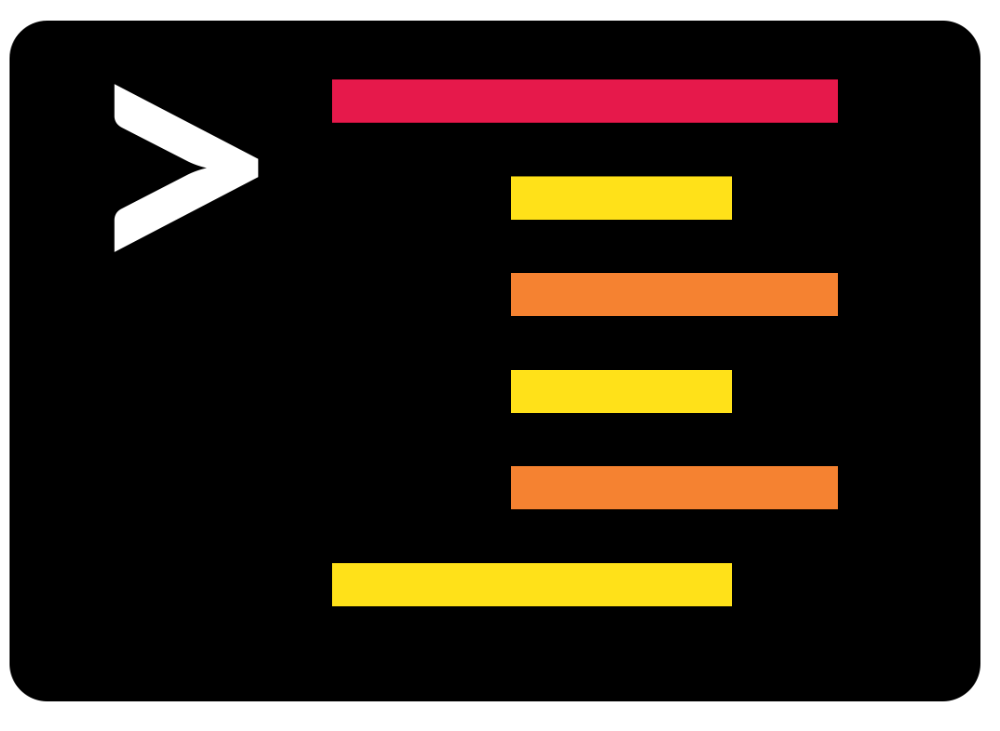
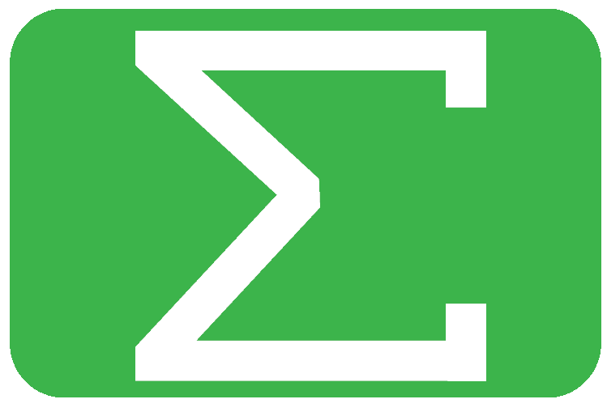

Chapter 7 Polishing
Genome polishing is very important for long read assembly. This is due to the relatively high rate of error in PacBio and ONT technologies compared to Illumina.
The general principle is to align reads to the genome assembly to correct incorrect bases. This is carried out by determining the consensus on each base. For example:
- The 10th base in a contig is A.
- Reads are aligned to the contig with 11 reads covering the 10th base.
- Therefore there are 11 bases from the reads aligned to the 10th base.
- 4 of these bases are A, 1 is C, and 6 are Gs.
- In this case the polisher may determine that the 10th base is more likely to be a G and so polishes the base to a G.
If possible I would recommend polishing with Illumina reads instead of long reads due if they are available. This is because Illumina reads are more accurate. However, we only have PacBio reads so that is what we will use.
7.1 Racon
Racon is a polisher that can use Illumina, PacBio or ONT reads to polish genome assemblies. This makes it a lot more flexible that other polishers that can only use one or two types of sequencing technologies for polishing.
7.1.1 Racon: Conda environment & directory

We will use the bacterial_assembly conda environment for our Racon polishing. Either:
- Use your currently open
bacterial_assemblyterminal. - Or, if you need a new
bacterial_assemblyterminal see the bacterial assembly conda activation instructions
Ensure you are in the correct directory and create a new output directory.
cd ~/bacterial_assembly/standard_workflow
mkdir -p racon/redbean/ecoli7.1.2 Racon: Index assembly

The first step is to bwa index the assembly we want polished. This will create various index files that start with redbean_assembly/ecoli.ctg.fa and end with different suffixes (.ann, .bwt, .mmi, etc).
Without the index files the read alignment process would be much more difficult and therefore slower. Imagine trying to search for a topic in an encyclopaedia without an index or trying to search for a topic in Wikipedia without the search bar. You could probably do it but it would take a lot longer.
#Index the assmebly
bwa index redbean_assembly/ecoli.ctg.fa
#List the index files
ls redbean_assembly/ecoli.ctg.fa.*7.1.3 Racon: Read alignment to assembly

With our index files created we can align the reads to the assembly. Ensure to use the reads which will be used for polishing. This may take >10 minutes.
bwa mem \
-t 8 \
-x pacbio \
redbean_assembly/ecoli.ctg.fa \
ecoli_reads/ecoli.fastq \
> racon/redbean/ecoli/ecoli_i1.samParameters
-t: Number of threads.-x: Read type. This will change various parameters to suit the read technology better.pacbio: Pacbio reads.ont2d: Oxford Nanopore 2D-reads
- The second last flagless input (
redbean_assembly/ecoli.ctg.fa) indicates the indexed assembly the reads will be aligned to. - The last flagless input (
ecoli_reads/ecoli.fastq) indicates the reads to be aligned. - The command would output the alignment to your screen (i.e. the standard output) but instead we will redirect (
>) it to a new file (racon/redbean/ecoli/ecoli_i1.sam). This is a SAM file which contains the alignment information (SAM file specification: https://samtools.github.io/hts-specs/SAMv1.pdf).
BAM files are the binary version of SAM files. For most processes we would convert the SAM to BAM for storage purposes (BAM files are smaller than SAM files). However, Racon requires a SAM file so we will not convert it to BAM.
7.1.4 Racon: Polishing
Now that we have all the required files we will carry out Racon polishing.
racon -t 8 \
ecoli_reads/ecoli.fastq \
racon/redbean/ecoli/ecoli_i1.sam \
redbean_assembly/ecoli.ctg.fa \
> racon/redbean/ecoli/ecoli_i1.fastaParameters
-t: Number of threads.- The first flagless input is the reads to be aligned.
- The second flagless input is the alignment file (SAM file).
- The third flagless input is the assembly to be polished.
- The output is redirected (
>) to a fasta file (racon/redbean/ecoli/ecoli_i1.fasta). This contains the polished assembly.
7.1.5 Racon: Polishing report
Unfortunately Racon does not create a polishing report. We will therefore create our own to determine how much polishing was carried out. This can be carried out with the dnadiff command from the program MUMmer.
dnadiff will create quite a few files so we will create an output directory for its results.
mkdir racon/redbean/ecoli/dnadiffWe will use dnadiff to align the original assembly (reference) to our polished assembly (query). This will then provide detailed information on the differences between the two assemblies (i.e. we can see how polishing affected the assembly).
dnadiff \
--prefix racon/redbean/ecoli/dnadiff/ref_redbean_query_raconi1 \
redbean_assembly/ecoli.ctg.fa \
racon/redbean/ecoli/ecoli_i1.fastaParameters
- --prefix : Prefix of the output files. The output files will be in the directory
racon/redbean/ecoli/dnadiff/with the prefixref_redbean_query_raconi1. - The first flagless input is the reference assembly for comparison.
- The second flagless input is the query assembly for comparison.
List all the output files.
ls racon/redbean/ecoli/dnadiffThere is a lot of information in them but for our purposes we will only inspect the report file.
less -S racon/redbean/ecoli/dnadiff/ref_redbean_query_raconi1.reportThere is a lot of useful information in this file. The [REF] column represents the original assembly whilst the [QRY] column represent the polished assembly. Let us go through some (not all) of the stats.
Note: Your values may differ from those mentioned below.
- [Sequences]
- TotalSeqs: We can see that we have dropped from 4 contigs to 1 contig. Racon has removed unpolished contigs.
- AlignedSeqs: Additionally, The 4 contigs of the reference align to the 1 contig of the query and vice versa.
- [Bases]
- TotalBases: Our total bases has decreased (~50kbp) from reference to query.
- [Feature Estimates]
- Insertions: There are 19 insertion events that consists of ~50Kbp in the reference assembly. This indicates these areas were caused by misassembly and removed from the query by polishing.
- [SNPs]
- TotalSNPs: We can see there are 627 SNPs between the two assemblies. This shows 627bp were changed due to the polisher.
- TotalIndels: 3782 single nucleotide Indels were found. This indicates a lot of bases were added and removed by polishing.
- The first four rows in the [QRY] column show added bases. ~2500 bases were added by polishing.
- The next four rows in the [QRY] column show bases removed by polishing. ~1200 bases were removed by polishing.
This shows that polishing definitely worked and did quite a lot.
For more info on dnadiff and the report statistics README:
https://github.com/mummer4/mummer/blob/master/docs/dnadiff.README
7.1.6 Racon: Second iteration
With genome polishing normally multiple iterations are required. Therefore let us polish the polished assembly to create the second iteration of polishing.
#Index iteration 1 polished assembly
bwa index racon/redbean/ecoli/ecoli_i1.fasta
#Align the reads to the iteration 1 polished assembly
#This will create the second iteration SAM file
bwa mem \
-t 8 \
-x pacbio \
racon/redbean/ecoli/ecoli_i1.fasta \
ecoli_reads/ecoli.fastq \
> racon/redbean/ecoli/ecoli_i2.sam
#Polish the iteration 1 polished assembly
#Carried out with the second iteration SAM file
racon \
-t 8 \
ecoli_reads/ecoli.fastq \
racon/redbean/ecoli/ecoli_i2.sam \
racon/redbean/ecoli/ecoli_i1.fasta \
> racon/redbean/ecoli/ecoli_i2.fastaWith the second iteration of polishing carried out we will assess how much polishing was carried out with dnadiff. In this case we will use the first iteration polished assembly as the reference and the second iteration polished assembly as the query.
dnadiff \
--prefix racon/redbean/ecoli/dnadiff/ref_raconi1_query_raconi2 \
racon/redbean/ecoli/ecoli_i1.fasta \
racon/redbean/ecoli/ecoli_i2.fastaInspect the new report file.
less -S racon/redbean/ecoli/dnadiff/ref_raconi1_query_raconi2.report7.1.7 Racon; Questions & Summary

Has the number of changes reduced?
Would you carry out further polishing?
The number of changes has indeed reduced by quite a bit, from 3782 to 40 TotalSNPs. When we are polishing we are looking for these stats to stop changing and converge to a similar value.
Unfortunately my experience is that no matter how many iterations you carry out these stats will not go to zero. Instead the polisher gets to a certain point where it cannot tell what base certain positions should be. As an example one position could be polished to change it from an A to a G then in the next polishing iteration it will change from G to A and so on.
So it would be advised to do some more polishing but for the sake of time we will continue on.
7.2 Other polishers
Other polishers to explore for yourself include (links in appendix):
Pilon- PacBio's
GenomicConsensus - ONT's
Medaka HyPoNextPolish